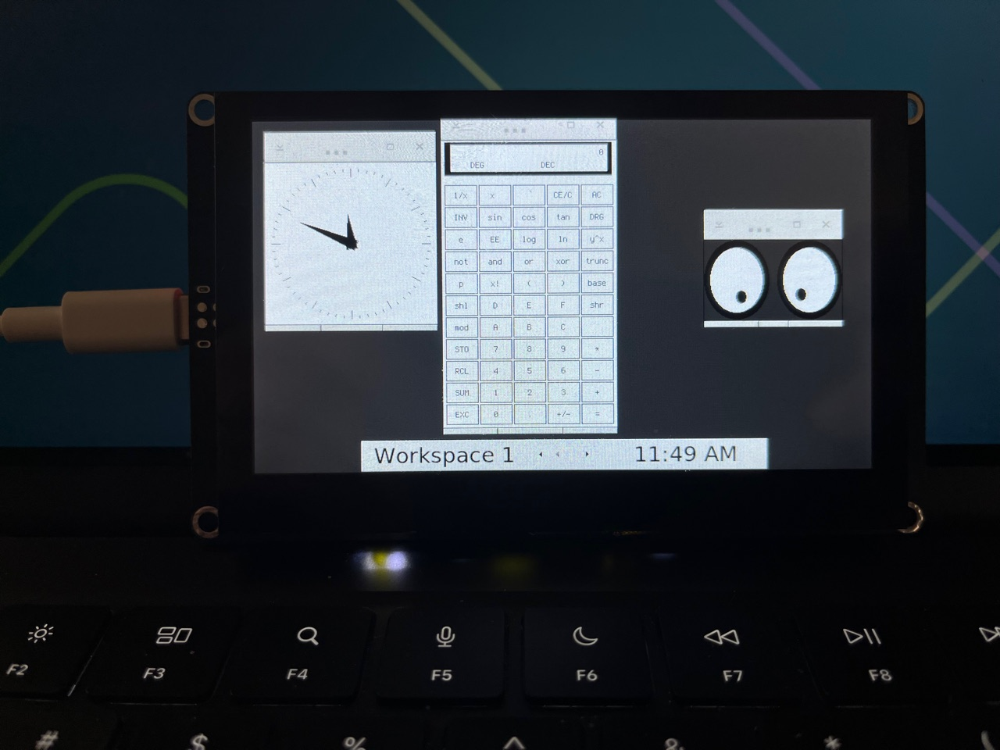

Woodland X11
Real X11. Tiny hardware.
An experimental X Window System server running on ESP32-S3, bringing Linux X11 applications to inexpensive touchscreens over SPI or Wi-Fi.

Watch the demo Source on GitHub
What it is
- The X11 core protocol, implemented from the specification. No extensions.
- Runs on an ESP32-S3 with PSRAM; tested on an ELECROW CrowPanel Advance 4.3″ (800×480).
- Clients connect over Wi-Fi, or over SPI from a Raspberry Pi host.
- The server draws on the panel itself: clients send X11 requests, not framebuffer images, so there is no screen streaming.
- The touchscreen is the X pointer.
Demo
“Woodland X11 demo” on YouTube. The player loads from youtube-nocookie.com only after you click.
Built for curiosity. Tested on real hardware.
Source: github.com/serg5z/woodland-x11. Apache-2.0. First release in preparation.